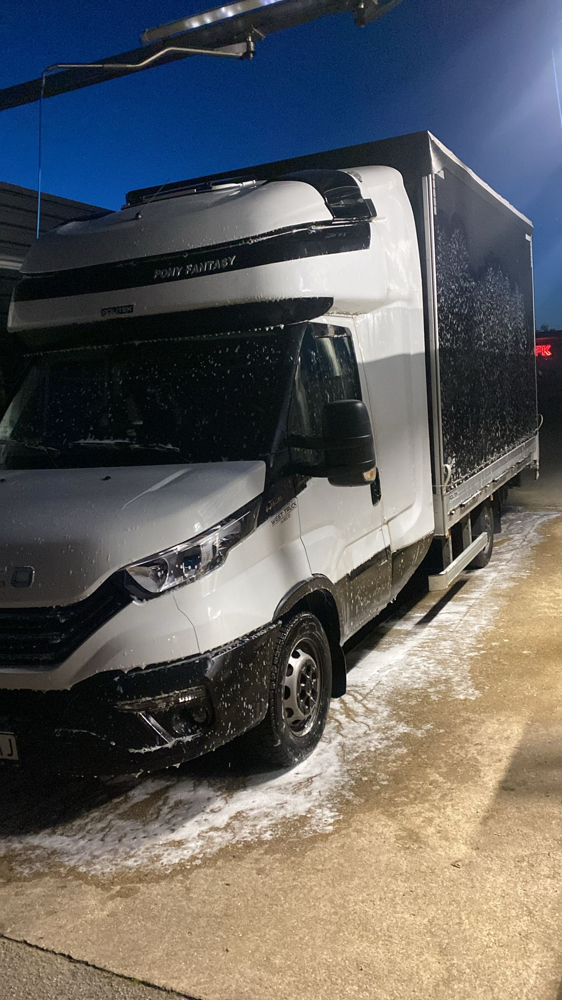

When to use express transport
For cargo whose delay may stop production, delay a repair or miss a critical delivery.
- Spare parts and production components
- Samples, tools and equipment
- Urgent pallets and time-sensitive cargo
Critical cargo · Spain ↔ Europe
When the deadline is decisive, we immediately review route, cargo and availability to propose a direct option and a realistic transit time.
Quick review of zip codes, date, weight, dimensions and cut-off time.
Vehicle3.5t van or dedicated capacity depending on cargo and availability.
ControlOperational contact during pickup, transit and delivery.

Operation according to availability
We review the collection time, destination, cargo and available capacity to propose a realistic deadline. The photograph does not represent a guaranteed route or delivery time.
For cargo whose delay may stop production, delay a repair or miss a critical delivery.
A complete application avoids unnecessary exchanges and allows capacity to be reviewed quickly.
When the operation requires it, we look for a dedicated solution to reduce manipulations and maintain clear communication during the journey.
Final confirmation always depends on availability, driving restrictions, access and actual road conditions.
We review pickups throughout Spain to France, Portugal, Germany, Italy, Benelux, Austria, Central Europe and other destinations accessible by road.
Send data nowFrequently asked questions
We confirm a realistic deadline after reviewing route, availability, driving restrictions and loading conditions.
We can review dedicated vehicles to reduce manipulations, always subject to capacity and operation requirements.
In addition to zip codes and cargo, we need the actual pick-up and delivery cut-off time.
We review each request based on vehicle availability, warehouse hours and applicable restrictions.
Related services
Comprehensive coordination for planned operations.
Options for pallets that do not require a complete vehicle.
Dedicated capacity and coordination until delivery.
Side, top or rear loading depending on the vehicle.